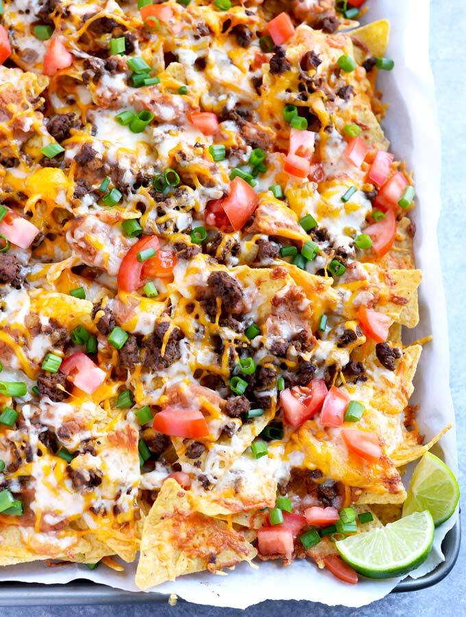

Layered Nacho Casserole

Loaded nachos with a large variety of toppings.
Nachos is a dish that everyone has tried and is an American favorite. I'm not fully satisfied by any old batch of nachos though, I must have variety! I have a rule of thumb that a chip with toppings is just that, a chip, not a nacho! I like to add flavored chips, like doritos as well and multiple layers and a ton of toppings. When complete it looks more akin to a casserole than nachos. This is a a favorite in my household and is both delicious and filling (although maybe not healthy :P).
Ingredients:
8 serving
- 2 bags different flavored tortilla chips (like Doritos)
- 8 ounces shredded mild cheddar cheese
- 8 ounces shredded mozzarella cheese
- 8 ounces shredded monterey jack cheese
- 8 oz sliced Jalapenos
- 8 oz sliced black olives
- 1/2 lb-1 lb ground beef, depending on how meat heavy you want them
- 1 pack taco seasoning (or homemade seasoning if you want)
- 12 ounces refried beans
- 1/2 white onion diced
- 2 roma tomatoes diced
- 3 green onions sliced
- 6 ounces black beans
- 1/2 cup chopped cilantro
- 1 Poblano pepper roasted then diced (optional, but worth it. 30-40 minutes in oven so you know).
- Some sour cream (I recommend the Daisy squeeze bottle for easy application), or some crema if you are feeling fancy
- Your favorite hot sauce
Directions:
- Cook the ground beef and add taco seasoning, set aside to cool until it can be handled.
- preheat oven to 350 degrees.
- Open both bags of chips and spread both flavors of chips evenly into a layer in a deep dish pan.
- Spread an even layer of refried beans on the chips.
- Sprinkle in 1 ounce of each cheese.
- Sprinkle in 1/3 of the ground beef you set aside earlier.
- Sprinkle in 1/2 of the olives.
- Sprinkle in the diced onion.
- Top with another ounce of each shredded cheese.
- Add another even layer of both chips.
- Sprinkle in 1 ounce of each cheese.
- Sprinkle in half of black beans.
- Sprinkle in another 1/3 of the ground beef.
- Sprinkle in half of the sliced jalapeno.
- Sprinkle in half of the roasted and diced poblano.
- Top with another 2 ounces of each cheese.
- Add another even layer of both flavored chips (you'll probably have some left over).
- Sprinkle 1 ounce of each cheap onto chips.
- Sprinkle the rest of the ground beef, black beans, Jalapenos, olives, and poblano.
- Top with the rest of the cheese.
- Bake for 10 minutes or until cheese is melted.
- Top with green sliced green onion, diced roma, chopped cilantro, sour cream (or crema), and your favorite hot sauce.
Home
.
{kind=link}